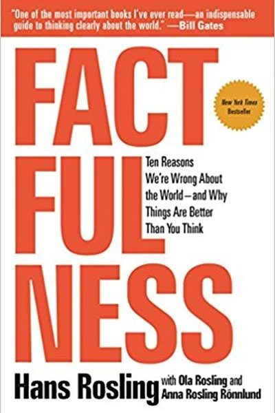

Library › Psychology & People
Factfulness — Summary & Key Lessons

Ten reasons we're wrong about the world — and why things are better than you think. The global bestseller by the late Hans Rosling.
📖 OPEN THE FULL INTERACTIVE BREAKDOWN →🌐 Read it in Hindi, Hinglish, Gujarati, Tamil & 22 more languages — free, with audio.
💡 The Big Idea
Rosling, a global health legend, tested thousands of people — including experts — on basic facts about the world (poverty, life expectancy, education) and found almost everyone scores worse than random. We're not stupid; we have dramatic instincts: the gap instinct, negativity instinct, fear instinct — ten cognitive reflexes that make the world look worse and more divided than it is. Factfulness is the habit of questioning those instincts and updating your worldview with data.
🧠 The 6 Key Lessons
Lesson 1: The Negativity Instinct: Bad News Sells, Good News Doesn't
The Negativity Instinct
Our brains are wired to notice threats, and media feeds the wiring: disasters, crises and scandals dominate the news while progress quietly compounds. The result: most people believe poverty, violence and disease are rising when they're falling. Remember: 'things can be bad AND getting better'.
📖 Example: Rosling's data: extreme poverty has halved in 20 years, child mortality keeps falling, life expectancy keeps rising — yet surveys show most people believe the opposite. The news reported the crises; nobody reported the 200,000 people who escaped poverty daily. Read the full example →
⚡ Do this: Next time you feel the world is falling apart, ask: 'Is this a single bad event — or a trend?' And look up one positive global statistic this week.
Lesson 2: The Gap Instinct: We See Two, Reality Has Four
The Gap Instinct
We split the world into 'us and them', rich and poor, developed and developing. Reality is a spectrum: most people live in the middle — not extreme poverty, not luxury. The 'developing world' label hides the billions who already have phones, electricity and education.
📖 Example: Rosling's famous Dollar Street project photographed homes across income levels: a 'poor' family in Bangladesh and a 'middle class' family in Mexico often live almost identically. The two-group story is a lie; the income ladder is real. Read the full example →
⚡ Do this: Replace binary labels with spectrums. When someone says 'those people', ask which rung of the ladder they mean.
Lesson 3: The Fear Instinct: What We Fear ≠ What's Dangerous
The Fear Instinct
We over-fear things that are scary (sharks, plane crashes, terrorism) and under-fear things that are dangerous (driving, sugar, indoor air pollution). Evolution wired us to fear dramatic threats; modernity's real risks are quiet and chronic.
📖 Example: Rosling notes people fear flying yet drive without worry — flying is dramatically safer per mile. In his own field, media panicked over rare diseases while the biggest killers (heart disease, poor sanitation) got routine coverage. Read the full example →
⚡ Do this: Make a list of your top 3 fears and check each against data: how likely is it really, compared to things you don't fear?
Lesson 4: The Straight-Line Instinct: The Future Is Not a Line
The Straight-Line Instinct
We assume trends continue in straight lines — population will keep exploding, China will keep growing at 10%. But most real trends are S-curves: they rise, then flatten. Thinking in straight lines makes you plan for a future that won't arrive.
📖 Example: In the 1960s, experts predicted children would drown in horse manure because traffic would keep growing in a straight line — until cars replaced horses. India's population growth, once feared as exponential, has been flattening for decades. Read the full example →
⚡ Do this: For any trend you're betting on, ask: 'Is this a straight line or an S-curve? What would make it flatten?'
Lesson 5: The Size Instinct: One Number Is Never Enough
Part 2: The Instincts
Rosling's warning about the most common data error: a single number, without comparison, is meaningless — '5 million people in poverty' sounds huge until you compare it to last year's 6 million, or to the total population, or to the trend line. The 'size instinct' makes us overreact to big numbers and miss the direction of change. His rule: whenever you see a number, always ask 'compared to what?' — compared to last year, to other countries, to the whole. The habit of comparing turns alarming headlines into accurate pictures: the story is rarely the big number itself but the comparison that puts it in perspective. One number is not a fact; it's a fragment. The context is the fact.
📖 Example: Rosling shows how news about 'a million refugees' or '10% unemployment' sounds catastrophic in isolation — but comparing across time and geography reveals whether the number is a peak, a trough, or a plateau, completely changing the appropriate response. The… Read the full example →
⚡ Do this: For the next alarming statistic you see, ask 'compared to what?' — find one comparison (last year, per capita, another country) before forming an opinion. Do this for three stories this week.
Lesson 6: The Generalization Instinct: Question Every Category You Use
Part 3: The Instincts
Rosling's cognitive audit of our tendency to categorize: humans group the world into 'us and them', 'developed and developing', 'rich and poor' — and every category hides more than it reveals. His famous example: 'developing countries' lumps together countries with higher life expectancy than the US with countries where children still die of hunger — the category is actively wrong. The fix is not to stop categorizing (impossible) but to question every category: look for the spread within it, remember that averages hide distributions, and notice that your 'them' is someone's 'us'. The generalization instinct is the root of prejudice and of bad policy alike. The antidote is curiosity about the differences inside every group you're tempted to flatten.
📖 Example: Rosling recounts asking his audiences to sort countries into income levels — and showing how their mental categories ('the West' vs 'the rest') were decades out of date, with most 'developing' countries now in the middle income band that dominates humanity.… Read the full example →
⚡ Do this: Pick one category you use often ('developing countries', 'young people', 'my industry'). Write down three differences WITHIN that category that the label hides — and use one of them to update a belief this week.
✅ 5-Step Action Plan
- Question 'the world is falling apart' — check trends, not events.
- Replace us/them with spectrums and ladders.
- Compare your fears to the data before acting on them.
- Before a big claim, ask: 'What would the data say?'
- Be less wrong this week: update one belief with one statistic.
💬 Best Quotes from Factfulness
- “When we have a fact-based worldview, we can see that the world is in a much better state than we think.”
- “The world cannot be understood without numbers — and it cannot be understood with numbers alone.”
- “Being always right is not the goal. Being less wrong is.”
Interactive version: mark lessons as read, listen in your language, share quote cards.